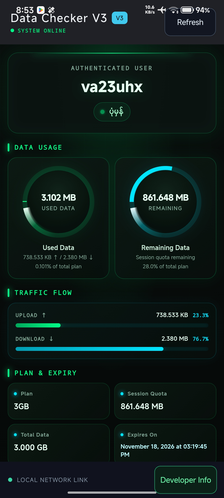

Mini App Store
Data Checker V3
Starlink Network Data
4.8 ★
Rating
262.96K
Size
v3.0
Version
About this app
Starlinkမှ Network Data လက်ကျန်များကို အချိန်နှင့် တပြေးညီ စစ်ဆေးရန်။ အသုံးပြုသူများအတွက် အဆင်ပြေလွယ်ကူစွာ အသုံးပြုနိုင်မည့် App ဖြစ်ပါသည်။
App Screenshot
